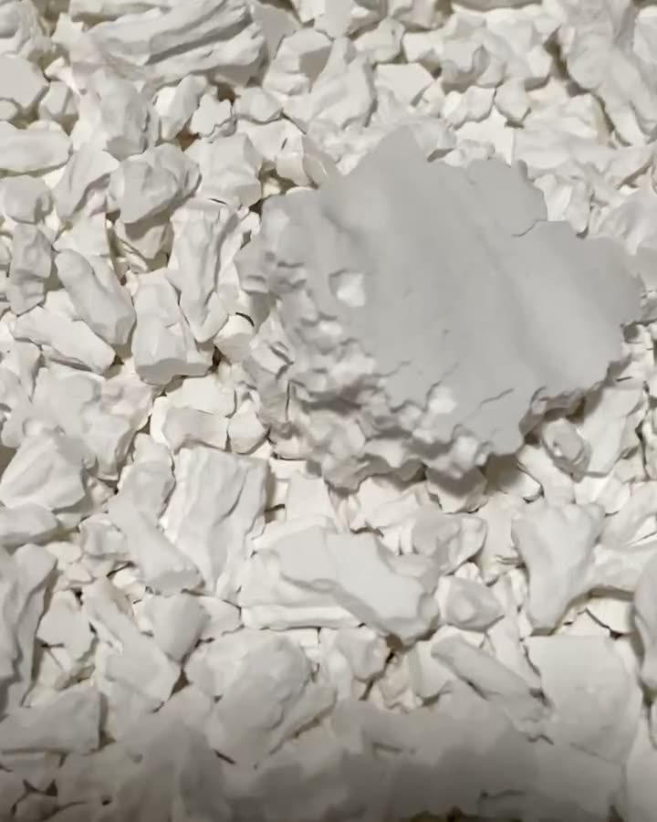
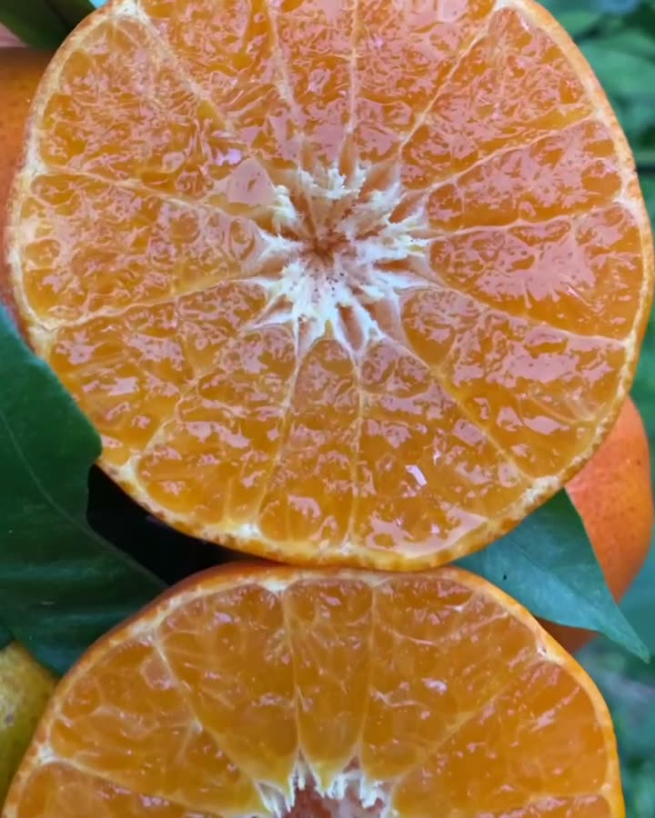
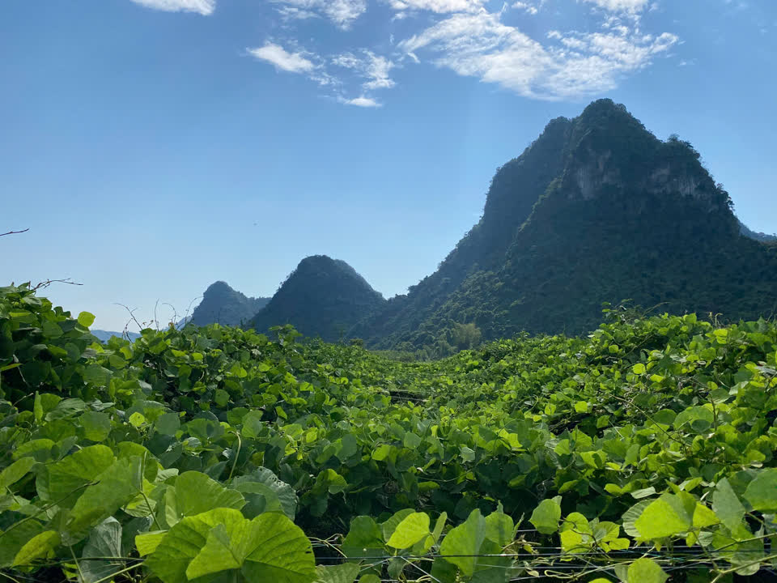
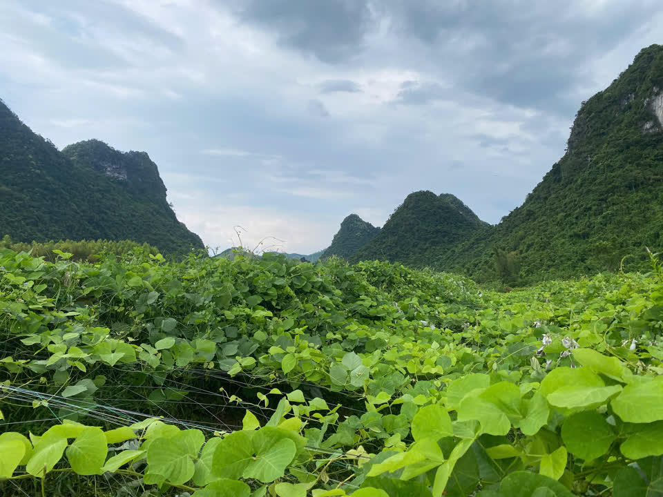
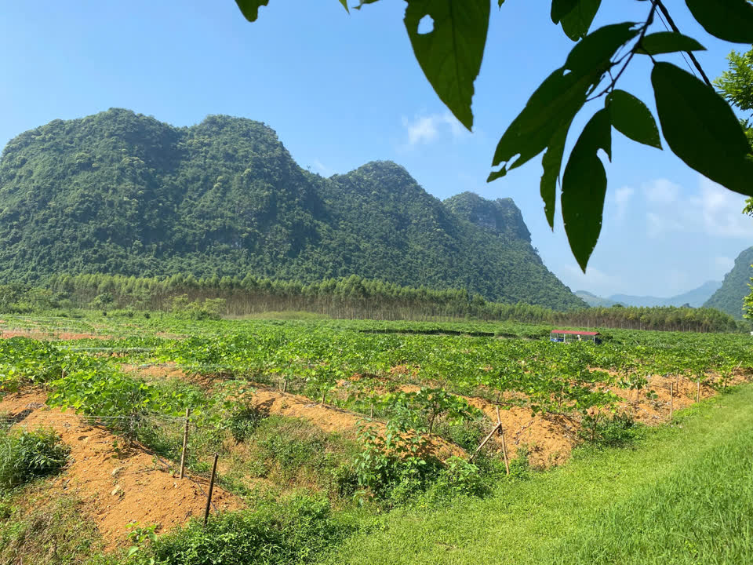
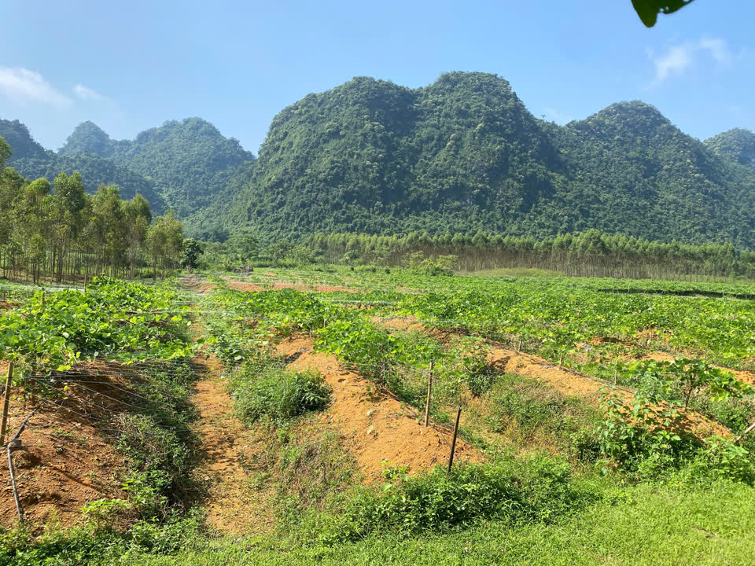
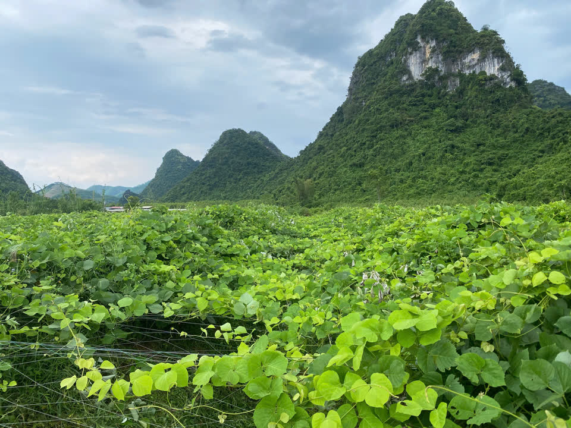
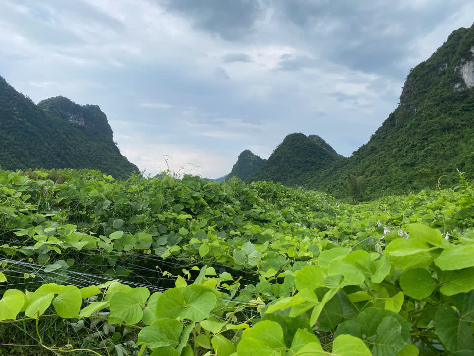

Có sẵn quanh nămTinh Bột Sắn Dây
Pha nước uống giải nhiệt, nấu chè, làm bánh. Bột trắng tự nhiên, không tẩy trắng, không phụ gia.
Đặt Tinh Bột Sắn Dây Xem chi tiết & cách pha →Củ đào tận gốc, lọc tay nhiều lượt, sấy lò kiểm soát nhiệt — không tẩy trắng, không phụ gia. Kèm Cam Đường Canh VietGAP theo mùa.
Bấm vào quy cách muốn mua — phiếu đặt hàng tự điền sẵn, gửi qua Zalo là xong.

Có sẵn quanh nămPha nước uống giải nhiệt, nấu chè, làm bánh. Bột trắng tự nhiên, không tẩy trắng, không phụ gia.
Đặt Tinh Bột Sắn Dây Xem chi tiết & cách pha →
VietGAP · Theo mùaChín tự nhiên trên cây, không thúc chín. Mùa thu hoạch khoảng tháng 11 âm lịch – tháng 1. Đặt trước để có hàng sớm nhất.
Đặt trước Cam Đường Canh Xem vườn cam →Trích nguyên văn từ đánh giá của khách đã mua trên Shopee mùa vừa rồi — không sửa chữ, tên khách được che bớt.
106 đánh giá trên Shopee
97 đánh giá 5 sao
Nguồn: shop Shopee “Cam Đường Canh TH”, mùa 2025–2026.
“Chất lượng rất ngon , ngọt , tươi đẹp có lựa chọn , giá siêu tốt . Nếu biết chất lượng tốt như vậy sẽ đặt gấp đôi hiện tại. 5sao”
“Cam ngon ngọt, mỏng vỏ, mọng nước. Ăn khác hẳn cam mình mua bên ngoài luôn huhu. Cả thùng 5kg nhưng bị vỡ có 2 trái bé thôi, do các trái khác đè vào nên vỡ...”
“Nhận được cam vẫn tươi rói ạ. Cam có vị ngọt thanh, dễ ăn. Mn nên thử nha”
“Đóng gói thùng xốp khá chắc chắn, cam ngon ngọt”
“Đã nhận sau 2 ngày. Quả mọng và ngọt ăn hết sẽ ủng hộ lần sau.”
“Cam rấtngon mọng nước ngọt vừa phải, vỏ mỏng giá hợp lí”
Quay thật, đủ các bước: trồng, thu hoạch, nghiền lọc, sấy, đóng gói — Tinh Bột Sắn Dây và Cam Đường Canh của Hợp tác xã Thế Hưng Organic.
Toàn bộ ảnh dưới đây chụp tại nương và xưởng của hợp tác xã.

Dây leo phủ kín giàn, củ lớn dần dưới đất trên nương xã Vũ Lăng.

Đến mùa, đào tận gốc, củ to chắc, đưa về xưởng trong ngày.

Rửa hết đất cát rồi nghiền nát, ép lấy nước bột.

Khuấy, để lắng, thay nước, lọc lại — đến khi bột thật trắng và trong.

Nhiệt độ cài sẵn, bột khô đều, không phụ thuộc nắng mưa.

Đóng túi ngay khi bột vừa khô, giữ trọn màu trắng tự nhiên.






Ảnh chụp thật tại xã Vũ Lăng, tỉnh Lạng Sơn.
Bấm "Đặt hàng ngay", chọn quy cách, điền tên – SĐT – địa chỉ rồi gửi phiếu qua Zalo (hoặc nhắn thẳng Zalo 0979 502 000). Nhà mình gọi/nhắn xác nhận đơn, báo phí ship và cách thanh toán trước khi gửi hàng.
Tinh Bột Sắn Dây đã sấy khô, bảo quản được lâu nên bán quanh năm. Cam Đường Canh là trái tươi, chỉ thu hoạch theo mùa (khoảng tháng 11 âm lịch đến tháng 1 năm sau).
Giao hàng toàn quốc qua đơn vị vận chuyển, thường 2–5 ngày tuỳ khu vực. Phí ship theo bảng giá đơn vị vận chuyển, báo trước khi bạn xác nhận đặt hàng.
Cam Đường Canh đạt chứng nhận VietGAP (số 112/CN-TĐC-TT-20-0012, NATEK JSC cấp, hiệu lực đến 22/12/2028). Giấy tờ của Tinh Bột Sắn Dây sẽ được công khai tại đây khi hợp tác xã hoàn tất hồ sơ — nhà mình chỉ ghi những gì có giấy thật.
Có — hợp tác xã nhận đặt sỉ (túi 5kg, 10kg) và trao đổi xuất khẩu cho Tinh Bột Sắn Dây. Nhắn Zalo để trao đổi số lượng, giá, cách đóng gói phù hợp.
Nhắn Zalo hoặc gọi — hợp tác xã phản hồi sớm, tư vấn quy cách và giao tận nơi trên toàn quốc.
hello@nongsannhalam.com · Giao hàng toàn quốc